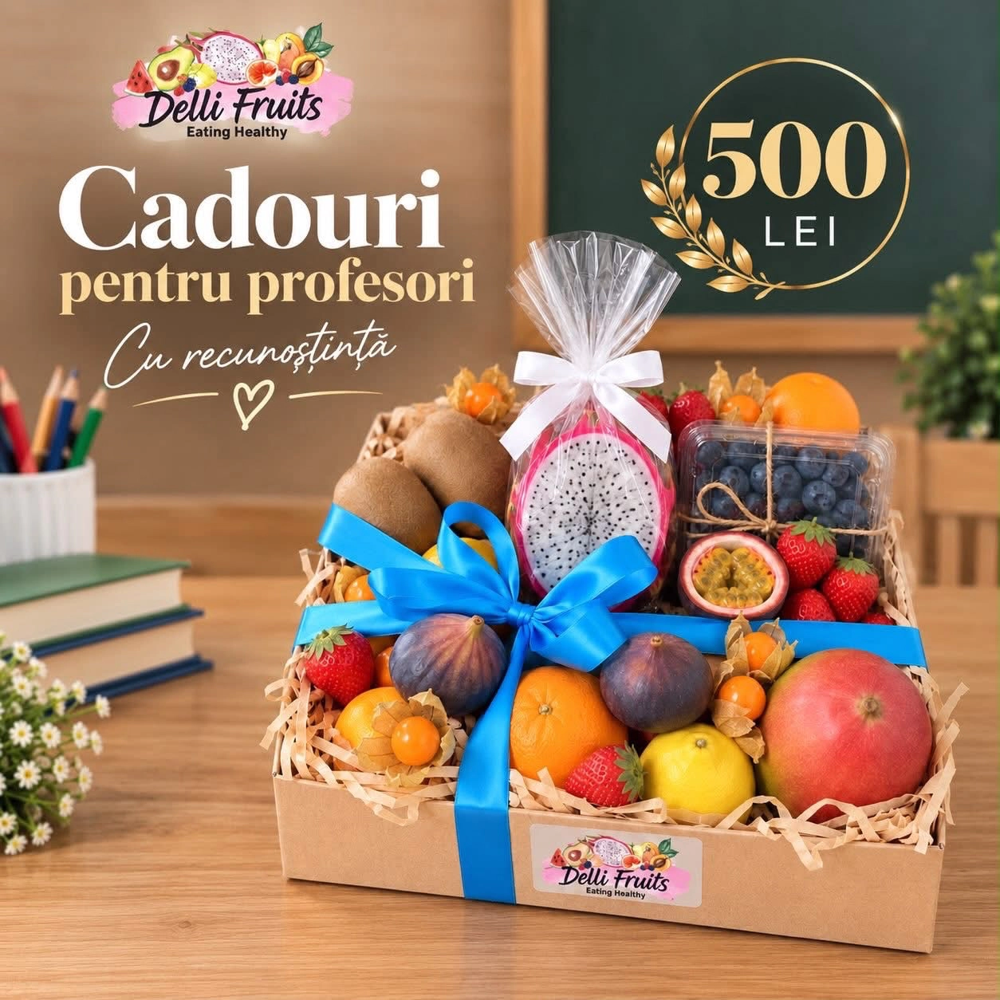

01 / TROPICAL MOOD
Cutia cu exotice
Mango, fructul pasiunii, dragon fruit.
O mică evadare tropicală.
Fructe exotice. Cadouri personale.
Momente care au alt gust.

01 / ALEGE CE-ȚI PLACE
Un răsfăț pentru tine. Un „mulțumesc” pentru cineva drag. Sau pur și simplu o zi mai colorată.
01 / TROPICAL MOOD
Mango, fructul pasiunii, dragon fruit.
O mică evadare tropicală.
02 / GIFT MOOD
Fructe și delicii. O combinație
aleasă pentru omul tău.
03 / EVERYDAY MOOD
Fructe colorate pentru pauze
care îți fac ziua mai bună.
Selecția se schimbă odată cu sezonul. Conținutul și prețul se confirmă cu echipa Delli.
02 / THE DELLI WAY
La Delli Fruits, fructele exotice întâlnesc bucuria de a dărui. În cutii cu fructe și cadouri personalizate, pentru tine sau pentru cineva care merită un zâmbet.
Creează o bucurie03 / MAKE IT PERSONAL
Fiecare persoană are gustul ei.
Hai să găsim combinația potrivită.
O cutie cu fructe exotice, doar pentru tine. Descoperă gusturi noi și transformă o zi obișnuită într-un mic ritual.
O cutie din colecție sau o idee doar a ta.
Confirmăm selecția, bugetul și detaliile.
Ridici din magazin sau discuți livrarea în Chișinău.
Vasile Alecsandri 35
Chișinău, Moldova